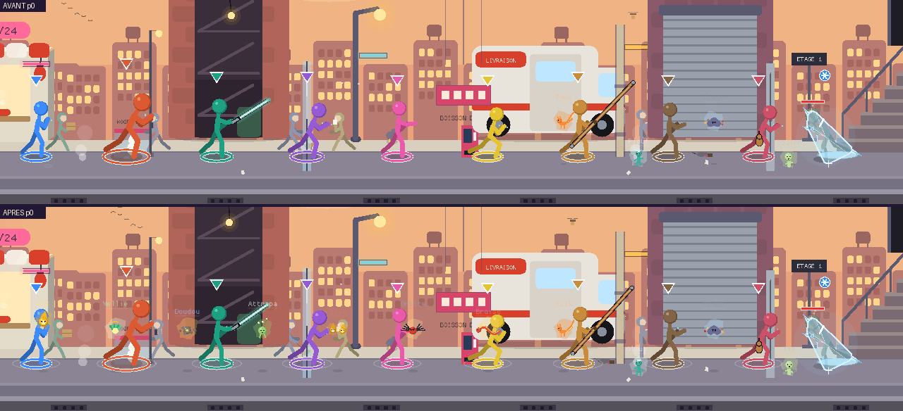
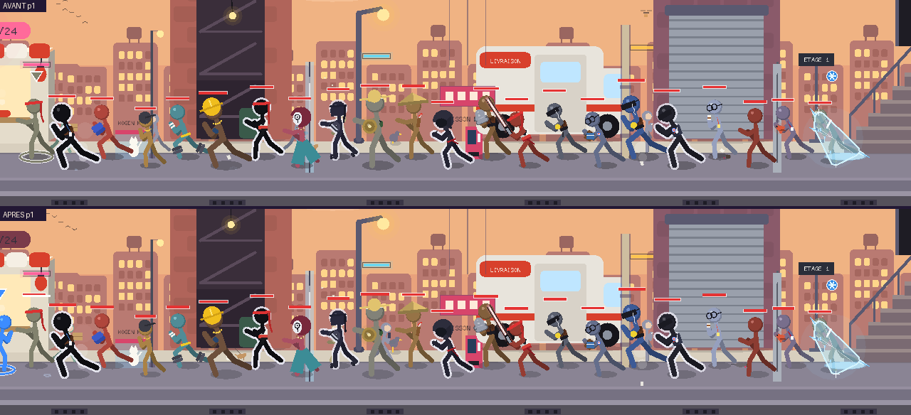
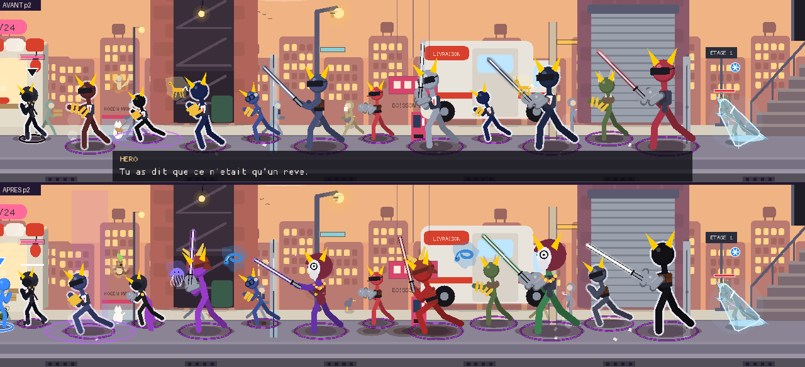
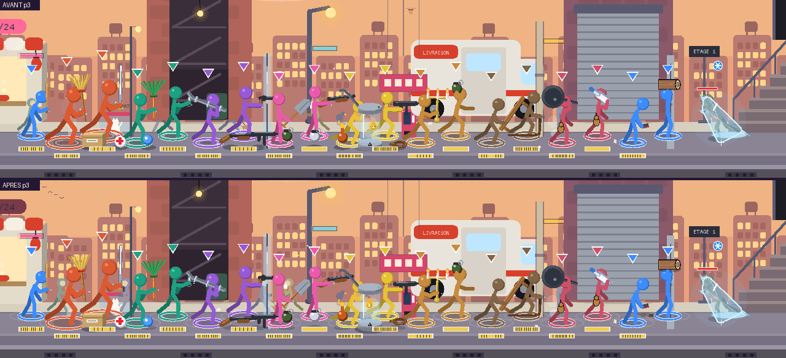
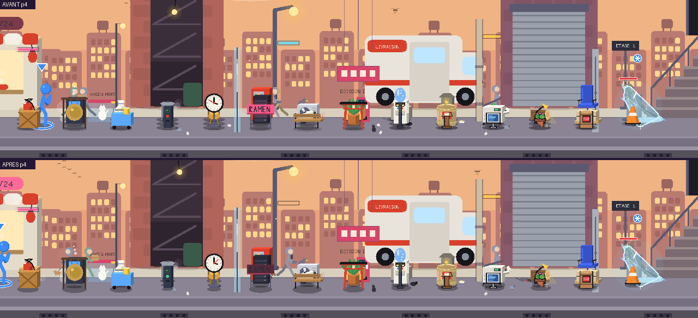
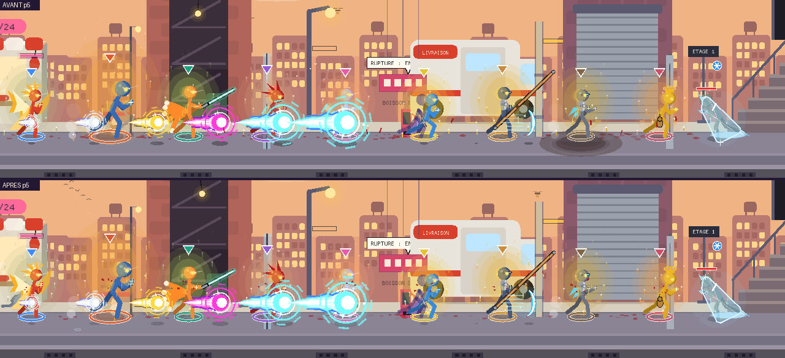
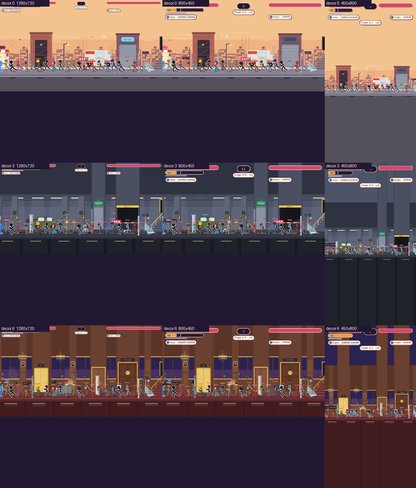
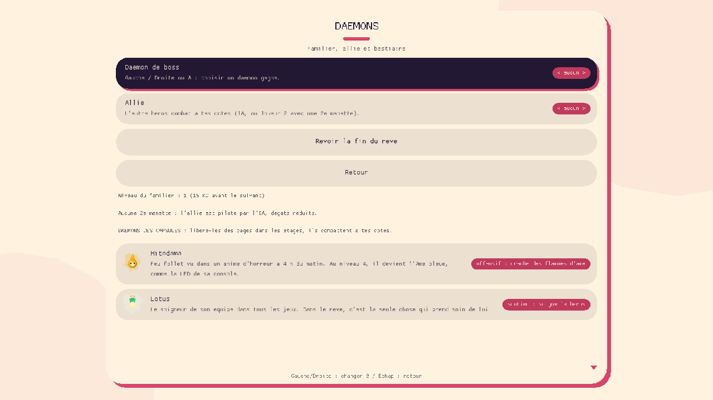

Une scène du vrai moteur assemble, a l'echelle réelle, les héros, ennemis, boss, les 11 daemons, toutes les armes tenues, les objets au sol, les 41 accessoires de décor, les projectiles et effets, avec les passants et animaux de fond du décor. Elle sert a mesurer la coherence (echelle, perspective, style, animation, daemons). 175 incoherences mesurees : 64 corrigees a la racine, 101 documentees avec règle chiffree, 3 proposees, 7 hors rendu par defaut.
1. Planches avant / après
Héros + 11 daemons

Ennemis (un par archetype, petit et grand)

Boss du plus petit au plus grand

Armes tenues + objets au sol

Accessoires de décor (41)

Effets : auras, projectiles, impacts

Matrice : 3 décors x 3 tailles d écran

Annuaire des daemons : chaque espèce a son portrait anime (après)

2. Règles chiffrees (testees en lot)
Echelle
Reference = héros standard, hauteur 84, tête 12,6 (0,15 x hauteur). Héros 0,9 a 1,2 x ; ennemis 0,85 a 1,3 x ; boss 0,9 a 2,2 x. Rapport hauteur/largeur 1,8 a 2,4. heights_follow_the_scale_ladder
Echelle
Arme tenue : longueur proportionnelle au porteur (hand_scale = hauteur/84, bornee 0,9 a 1,3) ; a la reference, arme en main = arme au sol. held_objects_are_proportional_to_the_holder
Daemons
Un daemon = une tête de combattant : rayon 10 x (1 + 0,05 x niveau) = 10,5 a 12,5 (0,7 a 1,05 x la tête). Endormi : x 0,88. Boss-daemon : rayon 15 partout (<= 1,6 x un daemon, < un quart de torse). Parade et menus : x 2,4 (PARADE_K). daemons_keep_their_scale
Daemons
Langage : formes simples, aplats en trois tons, aucun contour noir (l'encre ne sert qu'aux yeux), vivants (respiration, clignement). Presence : annuaire avec portrait anime pour chaque espèce. no_black_outline_on_daemons_and_effects
Perspective
Ombre au sol unique : ellipse 0,30 de haut/large, opacite 0,30 a hauteur zero, qui palit et rapetisse avec la hauteur, teinte du sol assombri ; jamais deux ombres sous un même objet. ground_shadows_come_from_one_function
Style
Tout ce qui assombrit l'image (bandes de cinema, fonds de barres, voiles) utilise la plaque prune ui_thème::dusk (#221834) ; aucun noir pur ni bleu-nuit propre a un module. Textes : mêmes police, creme / prune. charter_colors_are_readable
Style
Effets : trois tons teintes, jamais de contour noir ; traits d'effet proportionnels au zoom (clamp 0,7 a 1,6). no_black_outline_on_daemons_and_effects
Animation
Cadence de marche proportionnelle a la vitesse (pas par cycle / hauteur = mediane +/- 25 %) ; même principe anticipation / impact / suivi pour tous. dump_measures (cadence)
3. Corrections faites (64)
#68PERSPECTIVE ombre au sol : combattants (style baton, defaut)
ellipse 0,30 de large, opacite 0,42 x fondu, teinte sol x 0,38 (p0 héros+daemons)
corrige a la racine : style_guide::ground_shadow (aspect 0,30, opacite 0,30 de base, même loi de hauteur, même teinte) ; test ground_shadows_come_from_one_function
#69PERSPECTIVE ombre au sol : combattants (style detaille)
ellipse 0,30, opacite 0,35 noire (et non teintee) (p0 héros+daemons)
corrige a la racine : style_guide::ground_shadow (aspect 0,30, opacite 0,30 de base, même loi de hauteur, même teinte) ; test ground_shadows_come_from_one_function
#70PERSPECTIVE ombre au sol : objets : sabre et batte
ellipse 5/28 = 0,18 de large (trop plate) (p3 armes+objets)
corrige a la racine : style_guide::ground_shadow (aspect 0,30, opacite 0,30 de base, même loi de hauteur, même teinte) ; test ground_shadows_come_from_one_function
#71PERSPECTIVE ombre au sol : objets : caisse
ellipse 5/24 = 0,21 (p4 accessoires)
corrige a la racine : style_guide::ground_shadow (aspect 0,30, opacite 0,30 de base, même loi de hauteur, même teinte) ; test ground_shadows_come_from_one_function
corrige a la racine : style_guide::ground_shadow (aspect 0,30, opacite 0,30 de base, même loi de hauteur, même teinte) ; test ground_shadows_come_from_one_function
#73PERSPECTIVE ombre au sol : objets : tout le reste
corrige a la racine : style_guide::ground_shadow (aspect 0,30, opacite 0,30 de base, même loi de hauteur, même teinte) ; test ground_shadows_come_from_one_function
corrige a la racine : style_guide::ground_shadow (aspect 0,30, opacite 0,30 de base, même loi de hauteur, même teinte) ; test ground_shadows_come_from_one_function
#75PERSPECTIVE ombre au sol : rochers lances
ellipse 0,30, opacite 0,20 noire (p5 effets)
corrige a la racine : style_guide::ground_shadow (aspect 0,30, opacite 0,30 de base, même loi de hauteur, même teinte) ; test ground_shadows_come_from_one_function
#76PERSPECTIVE ombre au sol : daemons
opacite 0,22 x hauteur (les autres 0,30-0,42), rayon (7+niveau) au lieu du rayon du corps (p0 héros+daemons)
corrige a la racine : style_guide::ground_shadow (aspect 0,30, opacite 0,30 de base, même loi de hauteur, même teinte) ; test ground_shadows_come_from_one_function
#77PERSPECTIVE ombre au sol : modèle de caisse d'archives
ellipse 0,12/0,7 = 0,17, opacite 0,20 EN PLUS de l'ombre d'objet : double ombre (p4 accessoires)
corrige a la racine : style_guide::ground_shadow (aspect 0,30, opacite 0,30 de base, même loi de hauteur, même teinte) ; test ground_shadows_come_from_one_function
#78PERSPECTIVE ombre au sol : modèle de tonneau chimique / accessoires dessines a la main
corrige a la racine : style_guide::ground_shadow (aspect 0,30, opacite 0,30 de base, même loi de hauteur, même teinte) ; test ground_shadows_come_from_one_function
#79PERSPECTIVE ombre au sol : accessoires de décor (props_fx)
ellipse 0,16, opacite 0,16 : la plus pale et la plus plate du jeu (p4 accessoires)
corrige a la racine : style_guide::ground_shadow (aspect 0,30, opacite 0,30 de base, même loi de hauteur, même teinte) ; test ground_shadows_come_from_one_function
#80PERSPECTIVE ombre au sol : caisse portee au-dessus de la tête
l'ombre de la caisse restait dessinee sous la caisse EN L'AIR (ombre flottante) (p3 armes+objets)
corrige a la racine : style_guide::ground_shadow (aspect 0,30, opacite 0,30 de base, même loi de hauteur, même teinte) ; test ground_shadows_come_from_one_function
#81PERSPECTIVE ombre au sol : rayon de l'ombre d'un daemon vs son corps
ombre (7+niveau) x zoom = 8 a 12 ; corps 10,5 a 12,5 : ombre 24 % trop petite au niveau 1 (p0 héros+daemons)
corrige a la racine : style_guide::ground_shadow (aspect 0,30, opacite 0,30 de base, même loi de hauteur, même teinte) ; test ground_shadows_come_from_one_function
#82PERSPECTIVE ombre au sol : palissement avec la hauteur
corrige a la racine : style_guide::ground_shadow (aspect 0,30, opacite 0,30 de base, même loi de hauteur, même teinte) ; test ground_shadows_come_from_one_function
#83PERSPECTIVE ombre au sol : teinte
combattants teintes par le sol ; objets, projectiles, daemons noirs purs : trois teintes pour un même sol (p3 armes+objets)
corrige a la racine : style_guide::ground_shadow (aspect 0,30, opacite 0,30 de base, même loi de hauteur, même teinte) ; test ground_shadows_come_from_one_function
#84DAEMONS annuaire des daemons : Hitodama sans aucune image
ligne de texte seule (0 pixel de daemon sur l'écran DAEMONS) alors que le jeu les montre vivants partout ailleurs (menu annuaire)
corrige : PRow.glyph -> draw_daemon_game dans la ligne (même rayon DAEMON_R x 1,15 x unite)
#85DAEMONS annuaire des daemons : Lotus sans aucune image
ligne de texte seule (0 pixel de daemon sur l'écran DAEMONS) alors que le jeu les montre vivants partout ailleurs (menu annuaire)
corrige : PRow.glyph -> draw_daemon_game dans la ligne (même rayon DAEMON_R x 1,15 x unite)
#86DAEMONS annuaire des daemons : Golem sans aucune image
ligne de texte seule (0 pixel de daemon sur l'écran DAEMONS) alors que le jeu les montre vivants partout ailleurs (menu annuaire)
corrige : PRow.glyph -> draw_daemon_game dans la ligne (même rayon DAEMON_R x 1,15 x unite)
#87DAEMONS annuaire des daemons : Kodama a pousses sans aucune image
ligne de texte seule (0 pixel de daemon sur l'écran DAEMONS) alors que le jeu les montre vivants partout ailleurs (menu annuaire)
corrige : PRow.glyph -> draw_daemon_game dans la ligne (même rayon DAEMON_R x 1,15 x unite)
#88DAEMONS annuaire des daemons : Feux jumeaux sans aucune image
ligne de texte seule (0 pixel de daemon sur l'écran DAEMONS) alors que le jeu les montre vivants partout ailleurs (menu annuaire)
corrige : PRow.glyph -> draw_daemon_game dans la ligne (même rayon DAEMON_R x 1,15 x unite)
#89DAEMONS annuaire des daemons : Tengu sans aucune image
ligne de texte seule (0 pixel de daemon sur l'écran DAEMONS) alors que le jeu les montre vivants partout ailleurs (menu annuaire)
corrige : PRow.glyph -> draw_daemon_game dans la ligne (même rayon DAEMON_R x 1,15 x unite)
#90DAEMONS annuaire des daemons : Ryu sans aucune image
ligne de texte seule (0 pixel de daemon sur l'écran DAEMONS) alors que le jeu les montre vivants partout ailleurs (menu annuaire)
corrige : PRow.glyph -> draw_daemon_game dans la ligne (même rayon DAEMON_R x 1,15 x unite)
#91DAEMONS annuaire des daemons : Renard de flammes sans aucune image
ligne de texte seule (0 pixel de daemon sur l'écran DAEMONS) alors que le jeu les montre vivants partout ailleurs (menu annuaire)
corrige : PRow.glyph -> draw_daemon_game dans la ligne (même rayon DAEMON_R x 1,15 x unite)
#92DAEMONS annuaire des daemons : Kappa sans aucune image
ligne de texte seule (0 pixel de daemon sur l'écran DAEMONS) alors que le jeu les montre vivants partout ailleurs (menu annuaire)
corrige : PRow.glyph -> draw_daemon_game dans la ligne (même rayon DAEMON_R x 1,15 x unite)
#93DAEMONS annuaire des daemons : Raijin sans aucune image
ligne de texte seule (0 pixel de daemon sur l'écran DAEMONS) alors que le jeu les montre vivants partout ailleurs (menu annuaire)
corrige : PRow.glyph -> draw_daemon_game dans la ligne (même rayon DAEMON_R x 1,15 x unite)
#94DAEMONS annuaire des daemons : Kodama sans aucune image
ligne de texte seule (0 pixel de daemon sur l'écran DAEMONS) alors que le jeu les montre vivants partout ailleurs (menu annuaire)
corrige : PRow.glyph -> draw_daemon_game dans la ligne (même rayon DAEMON_R x 1,15 x unite)
#95DAEMONS annuaire : daemon de boss Tanuki sans image
ligne de texte seule ; le daemon gagne n'etait represente que par une coche (menu annuaire)
corrige : PRow.glyph (draw_boss_daemon, rayon BOSS_DAEMON_R x 0,95 x unite)
#96DAEMONS annuaire : daemon de boss Karura sans image
ligne de texte seule ; le daemon gagne n'etait represente que par une coche (menu annuaire)
corrige : PRow.glyph (draw_boss_daemon, rayon BOSS_DAEMON_R x 0,95 x unite)
#97DAEMONS annuaire : daemon de boss Kirin sans image
ligne de texte seule ; le daemon gagne n'etait represente que par une coche (menu annuaire)
corrige : PRow.glyph (draw_boss_daemon, rayon BOSS_DAEMON_R x 0,95 x unite)
#98DAEMONS annuaire : daemon de boss Daemon de boss 4 sans image
ligne de texte seule ; le daemon gagne n'etait represente que par une coche (menu annuaire)
corrige : PRow.glyph (draw_boss_daemon, rayon BOSS_DAEMON_R x 0,95 x unite)
#99DAEMONS annuaire : daemon de boss Daemon de boss 5 sans image
ligne de texte seule ; le daemon gagne n'etait represente que par une coche (menu annuaire)
corrige : PRow.glyph (draw_boss_daemon, rayon BOSS_DAEMON_R x 0,95 x unite)
#100DAEMONS annuaire : daemon de boss Daemon de boss 6 sans image
ligne de texte seule ; le daemon gagne n'etait represente que par une coche (menu annuaire)
corrige : PRow.glyph (draw_boss_daemon, rayon BOSS_DAEMON_R x 0,95 x unite)
#101DAEMONS annuaire : daemon de boss Daemon de boss 7 sans image
ligne de texte seule ; le daemon gagne n'etait represente que par une coche (menu annuaire)
corrige : PRow.glyph (draw_boss_daemon, rayon BOSS_DAEMON_R x 0,95 x unite)
#102DAEMONS daemon : rayon du corps d'un daemon de héros
10 x (1 + 0,05 x niveau) écrit a la main dans le rendu, 8 dans la capsule, 24 x k dans la parade : trois echelles pour la même espèce (p0 héros+daemons)
corrige : ui_thème::dusk (encre prune de la charte)
#175STYLE veines des pointes d'aura en noir translucide
Color(0,1 ; 0,1 ; 0,12 ; 0,55) sur 15 pointes x 3 couches : contour noir sur un effet (p5 effets)
corrige : veines teintees (aura x 0,3) ; test no_black_outline_on_daemons_and_effects
4. Proposees, à valider (3)
#106DAEMONS daemon : HUD : aucun portrait de daemon
0 icone de daemon dans la barre du héros : propriete, nom, humeur n'existent que dans le monde (bulle) ; le jeu ne dit pas au joueur quels daemons le suivent (p0 héros+daemons)
propose : pastille daemon (portrait 24 px + niveau) dans le HUD ; non implemente, à valider
#107DAEMONS daemon : bilan / roguelite : aucun daemon montre
écrans de fin d'étage et de run : les daemons gagnes n'apparaissent que sous forme de texte (p0 héros+daemons)
propose : rangee de portraits (même fonction que l'annuaire) ; non implemente
#108DAEMONS daemon : multijoueur : propriete du daemon
les daemons de plusieurs joueurs partagent la même palette, rien n'indique a qui ils appartiennent (p0 héros+daemons)
propose : anneau au sol de la couleur du joueur (comme les héros) ; non implemente
5. Documentees, non touchees (101) : collisions, poses et combos valides preserves
#1ECHELLE hero Sora : largeur de corps hors famille a hauteur egale
hauteur 84, largeur 36 (famille : 38) -> ratio h/l 2.33 contre 2.21 (p0 héros+daemons)
documente (la largeur est aussi la boîte de collision : non touchee pour ne pas casser l'équilibre ; règle testee : 1,8 <= h/l <= 2,4)
#2ECHELLE hero Bo : largeur de corps hors famille a hauteur egale
hauteur 84, largeur 36 (famille : 38) -> ratio h/l 2.33 contre 2.21 (p0 héros+daemons)
documente (la largeur est aussi la boîte de collision : non touchee pour ne pas casser l'équilibre ; règle testee : 1,8 <= h/l <= 2,4)
#3ECHELLE enemy Samourai Tsukikage : largeur de corps hors famille a hauteur egale
hauteur 84, largeur 36 (famille : 38) -> ratio h/l 2.33 contre 2.21 (p1 ennemis)
documente (la largeur est aussi la boîte de collision : non touchee pour ne pas casser l'équilibre ; règle testee : 1,8 <= h/l <= 2,4)
#4ECHELLE boss Directeur régional en tournee : largeur de corps hors famille a hauteur egale
hauteur 84, largeur 35.7 (famille : 38) -> ratio h/l 2.35 contre 2.21 (p2 boss)
documente (la largeur est aussi la boîte de collision : non touchee pour ne pas casser l'équilibre ; règle testee : 1,8 <= h/l <= 2,4)
#5ECHELLE boss Président du Sénat : largeur de corps hors famille a hauteur egale
hauteur 84, largeur 35.7 (famille : 38) -> ratio h/l 2.35 contre 2.21 (p2 boss)
documente (la largeur est aussi la boîte de collision : non touchee pour ne pas casser l'équilibre ; règle testee : 1,8 <= h/l <= 2,4)
#6ECHELLE boss Grand prêtre de l'Éveil : largeur de corps hors famille a hauteur egale
hauteur 84, largeur 35.7 (famille : 38) -> ratio h/l 2.35 contre 2.21 (p2 boss)
documente (la largeur est aussi la boîte de collision : non touchee pour ne pas casser l'équilibre ; règle testee : 1,8 <= h/l <= 2,4)
#7ECHELLE boss Lieutenant du Parrain : largeur de corps hors famille a hauteur egale
hauteur 84, largeur 35.7 (famille : 38) -> ratio h/l 2.35 contre 2.21 (p2 boss)
documente (la largeur est aussi la boîte de collision : non touchee pour ne pas casser l'équilibre ; règle testee : 1,8 <= h/l <= 2,4)
#8ECHELLE boss Ren Takeda : largeur de corps hors famille a hauteur egale
hauteur 84, largeur 36 (famille : 38) -> ratio h/l 2.33 contre 2.21 (p2 boss)
documente (la largeur est aussi la boîte de collision : non touchee pour ne pas casser l'équilibre ; règle testee : 1,8 <= h/l <= 2,4)
#9ECHELLE boss Kaze, PDG de Kogen : largeur de corps hors famille a hauteur egale
hauteur 84, largeur 35.7 (famille : 38) -> ratio h/l 2.35 contre 2.21 (p2 boss)
documente (la largeur est aussi la boîte de collision : non touchee pour ne pas casser l'équilibre ; règle testee : 1,8 <= h/l <= 2,4)
#10ECHELLE enemy Lutteur : hauteur hors de l'echelle a pas de 4
90 = 1.070 x la reference 84 (pas de multiple de 4) (p1 ennemis)
documente (facteurs de reskin 0,9 / 0,95 / 1,05 / 1,125 ; test heights_follow_the_scale_ladder borne le rapport)
#11ECHELLE enemy Garde du corps : hauteur hors de l'echelle a pas de 4
94.5 = 1.120 x la reference 84 (pas de multiple de 4) (p1 ennemis)
documente (facteurs de reskin 0,9 / 0,95 / 1,05 / 1,125 ; test heights_follow_the_scale_ladder borne le rapport)
#12ECHELLE enemy Garde présidentiel : hauteur hors de l'echelle a pas de 4
94.5 = 1.120 x la reference 84 (pas de multiple de 4) (p1 ennemis)
documente (facteurs de reskin 0,9 / 0,95 / 1,05 / 1,125 ; test heights_follow_the_scale_ladder borne le rapport)
#13ECHELLE enemy Garde du Sénateur : hauteur hors de l'echelle a pas de 4
94.5 = 1.120 x la reference 84 (pas de multiple de 4) (p1 ennemis)
documente (facteurs de reskin 0,9 / 0,95 / 1,05 / 1,125 ; test heights_follow_the_scale_ladder borne le rapport)
#14ECHELLE enemy Novice de l'Éveil : hauteur hors de l'echelle a pas de 4
79.8 = 0.950 x la reference 84 (pas de multiple de 4) (p1 ennemis)
documente (facteurs de reskin 0,9 / 0,95 / 1,05 / 1,125 ; test heights_follow_the_scale_ladder borne le rapport)
#15ECHELLE enemy Jardinier de l'Éveil : hauteur hors de l'echelle a pas de 4
103.5 = 1.230 x la reference 84 (pas de multiple de 4) (p1 ennemis)
documente (facteurs de reskin 0,9 / 0,95 / 1,05 / 1,125 ; test heights_follow_the_scale_ladder borne le rapport)
#16ECHELLE enemy Voyou du parc : hauteur hors de l'echelle a pas de 4
75.6 = 0.900 x la reference 84 (pas de multiple de 4) (p1 ennemis)
documente (facteurs de reskin 0,9 / 0,95 / 1,05 / 1,125 ; test heights_follow_the_scale_ladder borne le rapport)
#17ECHELLE enemy Pickpocket du parc : hauteur hors de l'echelle a pas de 4
75.6 = 0.900 x la reference 84 (pas de multiple de 4) (p1 ennemis)
documente (facteurs de reskin 0,9 / 0,95 / 1,05 / 1,125 ; test heights_follow_the_scale_ladder borne le rapport)
#18ECHELLE enemy Rabatteur de la mutuelle : hauteur hors de l'echelle a pas de 4
75.6 = 0.900 x la reference 84 (pas de multiple de 4) (p1 ennemis)
documente (facteurs de reskin 0,9 / 0,95 / 1,05 / 1,125 ; test heights_follow_the_scale_ladder borne le rapport)
#19ECHELLE enemy Videur du kiosque : hauteur hors de l'echelle a pas de 4
99 = 1.180 x la reference 84 (pas de multiple de 4) (p1 ennemis)
documente (facteurs de reskin 0,9 / 0,95 / 1,05 / 1,125 ; test heights_follow_the_scale_ladder borne le rapport)
#20ECHELLE enemy Ouvrier de Salvatore : hauteur hors de l'echelle a pas de 4
79.8 = 0.950 x la reference 84 (pas de multiple de 4) (p1 ennemis)
documente (facteurs de reskin 0,9 / 0,95 / 1,05 / 1,125 ; test heights_follow_the_scale_ladder borne le rapport)
#21ECHELLE enemy Gros bras du chantier : hauteur hors de l'echelle a pas de 4
103.5 = 1.230 x la reference 84 (pas de multiple de 4) (p1 ennemis)
documente (facteurs de reskin 0,9 / 0,95 / 1,05 / 1,125 ; test heights_follow_the_scale_ladder borne le rapport)
#22ECHELLE enemy Cloueur du chantier : hauteur hors de l'echelle a pas de 4
79.8 = 0.950 x la reference 84 (pas de multiple de 4) (p1 ennemis)
documente (facteurs de reskin 0,9 / 0,95 / 1,05 / 1,125 ; test heights_follow_the_scale_ladder borne le rapport)
#23ECHELLE enemy Rabatteur de bar : hauteur hors de l'echelle a pas de 4
79.8 = 0.950 x la reference 84 (pas de multiple de 4) (p1 ennemis)
documente (facteurs de reskin 0,9 / 0,95 / 1,05 / 1,125 ; test heights_follow_the_scale_ladder borne le rapport)
#24ECHELLE enemy Lanceur de bouchons : hauteur hors de l'echelle a pas de 4
79.8 = 0.950 x la reference 84 (pas de multiple de 4) (p1 ennemis)
documente (facteurs de reskin 0,9 / 0,95 / 1,05 / 1,125 ; test heights_follow_the_scale_ladder borne le rapport)
#25ECHELLE enemy Chef de quai : hauteur hors de l'echelle a pas de 4
99 = 1.180 x la reference 84 (pas de multiple de 4) (p1 ennemis)
documente (facteurs de reskin 0,9 / 0,95 / 1,05 / 1,125 ; test heights_follow_the_scale_ladder borne le rapport)
#26ECHELLE enemy Annonceur sonore : hauteur hors de l'echelle a pas de 4
79.8 = 0.950 x la reference 84 (pas de multiple de 4) (p1 ennemis)
documente (facteurs de reskin 0,9 / 0,95 / 1,05 / 1,125 ; test heights_follow_the_scale_ladder borne le rapport)
#27ECHELLE enemy Plongeur de la cantine : hauteur hors de l'echelle a pas de 4
79.8 = 0.950 x la reference 84 (pas de multiple de 4) (p1 ennemis)
documente (facteurs de reskin 0,9 / 0,95 / 1,05 / 1,125 ; test heights_follow_the_scale_ladder borne le rapport)
#28ECHELLE enemy Chef de rang : hauteur hors de l'echelle a pas de 4
99 = 1.180 x la reference 84 (pas de multiple de 4) (p1 ennemis)
documente (facteurs de reskin 0,9 / 0,95 / 1,05 / 1,125 ; test heights_follow_the_scale_ladder borne le rapport)
#29ECHELLE enemy Lanceur de baguettes : hauteur hors de l'echelle a pas de 4
79.8 = 0.950 x la reference 84 (pas de multiple de 4) (p1 ennemis)
documente (facteurs de reskin 0,9 / 0,95 / 1,05 / 1,125 ; test heights_follow_the_scale_ladder borne le rapport)
#30ECHELLE boss Videur du parking : hauteur hors de l'echelle a pas de 4
105 = 1.250 x la reference 84 (pas de multiple de 4) (p2 boss)
documente (facteurs de reskin 0,9 / 0,95 / 1,05 / 1,125 ; test heights_follow_the_scale_ladder borne le rapport)
#31ECHELLE boss Chef de la securite de la tour : hauteur hors de l'echelle a pas de 4
126 = 1.500 x la reference 84 (pas de multiple de 4) (p2 boss)
documente (facteurs de reskin 0,9 / 0,95 / 1,05 / 1,125 ; test heights_follow_the_scale_ladder borne le rapport)
#32ECHELLE boss Le Parrain Salvatore : hauteur hors de l'echelle a pas de 4
105 = 1.250 x la reference 84 (pas de multiple de 4) (p2 boss)
documente (facteurs de reskin 0,9 / 0,95 / 1,05 / 1,125 ; test heights_follow_the_scale_ladder borne le rapport)
#33ECHELLE boss Le Shogun Tsukikage : hauteur hors de l'echelle a pas de 4
126 = 1.500 x la reference 84 (pas de multiple de 4) (p2 boss)
documente (facteurs de reskin 0,9 / 0,95 / 1,05 / 1,125 ; test heights_follow_the_scale_ladder borne le rapport)
#34ECHELLE boss Sénateur Dufresne : hauteur hors de l'echelle a pas de 4
88.2 = 1.050 x la reference 84 (pas de multiple de 4) (p2 boss)
documente (facteurs de reskin 0,9 / 0,95 / 1,05 / 1,125 ; test heights_follow_the_scale_ladder borne le rapport)
#35ECHELLE boss Dylan, chef de la securite : hauteur hors de l'echelle a pas de 4
105 = 1.250 x la reference 84 (pas de multiple de 4) (p2 boss)
documente (facteurs de reskin 0,9 / 0,95 / 1,05 / 1,125 ; test heights_follow_the_scale_ladder borne le rapport)
#36ECHELLE ennemi Jardinier de l'Éveil plus grand que le plus grand héros
103.5 contre 100 (Gorr) : sous-fifre 1.03 x un colosse jouable (p1 ennemis)
documente (borne testee : <= 1,3 x reference)
#37ECHELLE ennemi Gros bras du chantier plus grand que le plus grand héros
103.5 contre 100 (Gorr) : sous-fifre 1.03 x un colosse jouable (p1 ennemis)
documente (borne testee : <= 1,3 x reference)
#38ECHELLE même personnage, deux tailles : Kaze
Kaze 80 / Kaze, PDG de Kogen 84 (p2 boss)
documente (un même visage doit garder sa hauteur d'un chapitre a l'autre)
#39ECHELLE même personnage, deux tailles : Shogun
Shogun Tsukikage 120 / Le Shogun Tsukikage 126 (p2 boss)
documente (un même visage doit garder sa hauteur d'un chapitre a l'autre)
#40ECHELLE même personnage, deux tailles : Dylan
Dylan, chef des stagiaires 100 / Dylan, chef de la securite 105 (p2 boss)
documente (un même visage doit garder sa hauteur d'un chapitre a l'autre)
#41ANIMATION enemy Lutteur : cadence de marche incoherente avec sa vitesse (glissade des pieds)
pas par cycle / hauteur = 0.021 contre mediane 0.030 (-30 %) ; vitesse 1.9, cadence 1 (p1 ennemis)
documente (anim_speed est un réglage de feeling par combattant ; proposition : cadence = vitesse / (hauteur x mediane))
#42ANIMATION enemy Garde du corps : cadence de marche incoherente avec sa vitesse (glissade des pieds)
pas par cycle / hauteur = 0.020 contre mediane 0.030 (-33 %) ; vitesse 1.9, cadence 1 (p1 ennemis)
documente (anim_speed est un réglage de feeling par combattant ; proposition : cadence = vitesse / (hauteur x mediane))
#43ANIMATION enemy Adepte en transe : cadence de marche incoherente avec sa vitesse (glissade des pieds)
pas par cycle / hauteur = 0.038 contre mediane 0.030 (+26 %) ; vitesse 3.18, cadence 1 (p1 ennemis)
documente (anim_speed est un réglage de feeling par combattant ; proposition : cadence = vitesse / (hauteur x mediane))
#44ANIMATION enemy Garde présidentiel : cadence de marche incoherente avec sa vitesse (glissade des pieds)
pas par cycle / hauteur = 0.020 contre mediane 0.030 (-33 %) ; vitesse 1.9, cadence 1 (p1 ennemis)
documente (anim_speed est un réglage de feeling par combattant ; proposition : cadence = vitesse / (hauteur x mediane))
#45ANIMATION enemy Acrobate Tsukikage : cadence de marche incoherente avec sa vitesse (glissade des pieds)
pas par cycle / hauteur = 0.043 contre mediane 0.030 (+44 %) ; vitesse 3.63, cadence 1 (p1 ennemis)
documente (anim_speed est un réglage de feeling par combattant ; proposition : cadence = vitesse / (hauteur x mediane))
#46ANIMATION enemy Garde du Sénateur : cadence de marche incoherente avec sa vitesse (glissade des pieds)
pas par cycle / hauteur = 0.020 contre mediane 0.030 (-33 %) ; vitesse 1.9, cadence 1 (p1 ennemis)
documente (anim_speed est un réglage de feeling par combattant ; proposition : cadence = vitesse / (hauteur x mediane))
#47ANIMATION enemy Novice de l'Éveil : cadence de marche incoherente avec sa vitesse (glissade des pieds)
pas par cycle / hauteur = 0.038 contre mediane 0.030 (+28 %) ; vitesse 3.06, cadence 1 (p1 ennemis)
documente (anim_speed est un réglage de feeling par combattant ; proposition : cadence = vitesse / (hauteur x mediane))
#48ANIMATION enemy Jardinier de l'Éveil : cadence de marche incoherente avec sa vitesse (glissade des pieds)
pas par cycle / hauteur = 0.017 contre mediane 0.030 (-43 %) ; vitesse 1.77, cadence 1 (p1 ennemis)
documente (anim_speed est un réglage de feeling par combattant ; proposition : cadence = vitesse / (hauteur x mediane))
#49ANIMATION enemy Coach de cohésion : cadence de marche incoherente avec sa vitesse (glissade des pieds)
pas par cycle / hauteur = 0.038 contre mediane 0.030 (+26 %) ; vitesse 3.18, cadence 1 (p1 ennemis)
documente (anim_speed est un réglage de feeling par combattant ; proposition : cadence = vitesse / (hauteur x mediane))
#50ANIMATION enemy Pickpocket du parc : cadence de marche incoherente avec sa vitesse (glissade des pieds)
pas par cycle / hauteur = 0.041 contre mediane 0.030 (+35 %) ; vitesse 3.08, cadence 1 (p1 ennemis)
documente (anim_speed est un réglage de feeling par combattant ; proposition : cadence = vitesse / (hauteur x mediane))
#51ANIMATION enemy Videur du kiosque : cadence de marche incoherente avec sa vitesse (glissade des pieds)
pas par cycle / hauteur = 0.019 contre mediane 0.030 (-36 %) ; vitesse 1.9, cadence 1 (p1 ennemis)
documente (anim_speed est un réglage de feeling par combattant ; proposition : cadence = vitesse / (hauteur x mediane))
#52ANIMATION enemy Gros bras du chantier : cadence de marche incoherente avec sa vitesse (glissade des pieds)
pas par cycle / hauteur = 0.018 contre mediane 0.030 (-39 %) ; vitesse 1.9, cadence 1 (p1 ennemis)
documente (anim_speed est un réglage de feeling par combattant ; proposition : cadence = vitesse / (hauteur x mediane))
#53ANIMATION enemy Chef de quai : cadence de marche incoherente avec sa vitesse (glissade des pieds)
pas par cycle / hauteur = 0.019 contre mediane 0.030 (-36 %) ; vitesse 1.9, cadence 1 (p1 ennemis)
documente (anim_speed est un réglage de feeling par combattant ; proposition : cadence = vitesse / (hauteur x mediane))
#54ANIMATION enemy Livreur de plateaux : cadence de marche incoherente avec sa vitesse (glissade des pieds)
pas par cycle / hauteur = 0.043 contre mediane 0.030 (+44 %) ; vitesse 3.64, cadence 1 (p1 ennemis)
documente (anim_speed est un réglage de feeling par combattant ; proposition : cadence = vitesse / (hauteur x mediane))
#55ANIMATION enemy Chef de rang : cadence de marche incoherente avec sa vitesse (glissade des pieds)
pas par cycle / hauteur = 0.019 contre mediane 0.030 (-36 %) ; vitesse 1.9, cadence 1 (p1 ennemis)
documente (anim_speed est un réglage de feeling par combattant ; proposition : cadence = vitesse / (hauteur x mediane))
#56ANIMATION boss Shogun Tsukikage : cadence de marche incoherente avec sa vitesse (glissade des pieds)
pas par cycle / hauteur = 0.021 contre mediane 0.030 (-31 %) ; vitesse 2, cadence 0.8 (p2 boss)
documente (anim_speed est un réglage de feeling par combattant ; proposition : cadence = vitesse / (hauteur x mediane))
#57ANIMATION boss Administrateur système : cadence de marche incoherente avec sa vitesse (glissade des pieds)
pas par cycle / hauteur = 0.021 contre mediane 0.030 (-31 %) ; vitesse 2, cadence 0.8 (p2 boss)
documente (anim_speed est un réglage de feeling par combattant ; proposition : cadence = vitesse / (hauteur x mediane))
#58ANIMATION boss Gourou du séminaire : cadence de marche incoherente avec sa vitesse (glissade des pieds)
pas par cycle / hauteur = 0.023 contre mediane 0.030 (-25 %) ; vitesse 2.16, cadence 0.8 (p2 boss)
documente (anim_speed est un réglage de feeling par combattant ; proposition : cadence = vitesse / (hauteur x mediane))
#59ANIMATION boss Chef de la securite de la tour : cadence de marche incoherente avec sa vitesse (glissade des pieds)
pas par cycle / hauteur = 0.018 contre mediane 0.030 (-39 %) ; vitesse 1.86, cadence 0.8 (p2 boss)
documente (anim_speed est un réglage de feeling par combattant ; proposition : cadence = vitesse / (hauteur x mediane))
#60ANIMATION boss Maître assassin Tsukikage : cadence de marche incoherente avec sa vitesse (glissade des pieds)
pas par cycle / hauteur = 0.041 contre mediane 0.030 (+37 %) ; vitesse 4.6, cadence 1.4 (p2 boss)
documente (anim_speed est un réglage de feeling par combattant ; proposition : cadence = vitesse / (hauteur x mediane))
#61ANIMATION boss Gourou du team building : cadence de marche incoherente avec sa vitesse (glissade des pieds)
pas par cycle / hauteur = 0.017 contre mediane 0.030 (-42 %) ; vitesse 2.01, cadence 0.8 (p2 boss)
documente (anim_speed est un réglage de feeling par combattant ; proposition : cadence = vitesse / (hauteur x mediane))
#62ANIMATION boss Chef des travaux sans fin : cadence de marche incoherente avec sa vitesse (glissade des pieds)
pas par cycle / hauteur = 0.014 contre mediane 0.030 (-54 %) ; vitesse 2, cadence 0.8 (p2 boss)
documente (anim_speed est un réglage de feeling par combattant ; proposition : cadence = vitesse / (hauteur x mediane))
#63ANIMATION boss Parrain du marche de nuit : cadence de marche incoherente avec sa vitesse (glissade des pieds)
pas par cycle / hauteur = 0.017 contre mediane 0.030 (-42 %) ; vitesse 2, cadence 0.8 (p2 boss)
documente (anim_speed est un réglage de feeling par combattant ; proposition : cadence = vitesse / (hauteur x mediane))
#64ANIMATION boss Conducteur du dernier train : cadence de marche incoherente avec sa vitesse (glissade des pieds)
pas par cycle / hauteur = 0.019 contre mediane 0.030 (-37 %) ; vitesse 2, cadence 0.8 (p2 boss)
documente (anim_speed est un réglage de feeling par combattant ; proposition : cadence = vitesse / (hauteur x mediane))
#65ANIMATION boss Chef étoile de la cantine : cadence de marche incoherente avec sa vitesse (glissade des pieds)
pas par cycle / hauteur = 0.016 contre mediane 0.030 (-46 %) ; vitesse 1.86, cadence 0.8 (p2 boss)
documente (anim_speed est un réglage de feeling par combattant ; proposition : cadence = vitesse / (hauteur x mediane))
#66ANIMATION boss Dylan, chef des stagiaires : cadence de marche incoherente avec sa vitesse (glissade des pieds)
pas par cycle / hauteur = 0.039 contre mediane 0.030 (+30 %) ; vitesse 3.02, cadence 0.77 (p2 boss)
documente (anim_speed est un réglage de feeling par combattant ; proposition : cadence = vitesse / (hauteur x mediane))
#67ANIMATION boss Le Shogun Tsukikage : cadence de marche incoherente avec sa vitesse (glissade des pieds)
pas par cycle / hauteur = 0.020 contre mediane 0.030 (-34 %) ; vitesse 2, cadence 0.8 (p2 boss)
documente (anim_speed est un réglage de feeling par combattant ; proposition : cadence = vitesse / (hauteur x mediane))